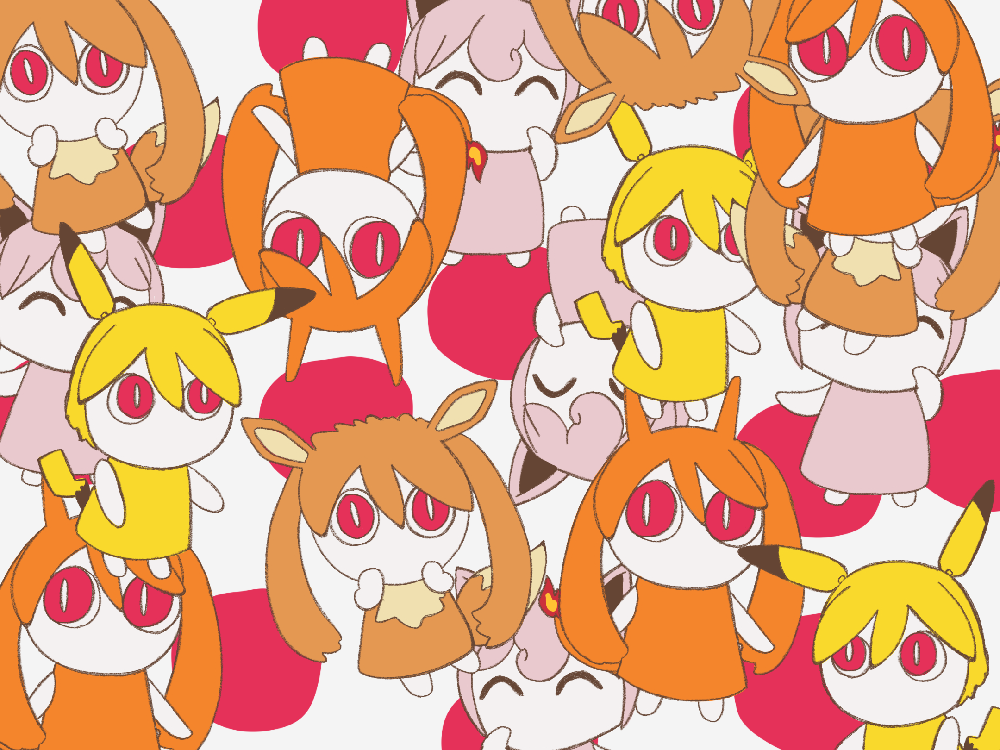

ポケットのモンスター or The Pokémon Inside My Heart is PinocchioP's newest song at the time of making this website. It's part of a collaboration between Pokémon and 18 different Vocaloid producers and is the fourth song in the collaboration. It's a sweet song about the nostalgia of playing your first Pokémon game.